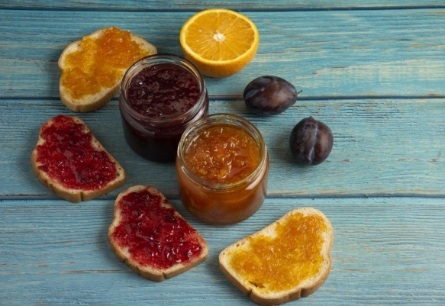

Industry Information
Jun. 13, 2025
In the dynamic world of food science, achieving the perfect balance of taste, texture, shelf life, and safety is paramount. Among the array of food additives enabling this, fumaric acid stands out for its remarkable versatility and efficacy. This naturally occurring organic acid (found in mushrooms, lichen, and Iceland moss) is primarily produced synthetically for large-scale food applications, playing crucial roles that extend far beyond simple acidification. Let's explore why fumaric acid is a cornerstone ingredient for food manufacturers.

Fumaric acid (chemical formula C4H4O4) is a dicarboxylic acid. It occurs naturally in small quantities in various plants and fungi but is produced commercially through the catalytic isomerization of maleic acid, derived from maleic anhydride (itself produced from benzene or butane). This white, odorless crystalline powder possesses a strongly acidic, fruity taste. Its key technical advantages include high solubility (compared to some other acidulants), low hygroscopicity (it doesn't readily absorb moisture), and exceptional stability under high temperatures and during prolonged storage.
Fumaric acid serves multiple essential functions:
Acidulant & pH Control: Its primary role is to provide a sharp, clean, lingering tartness, enhancing fruit flavors and balancing sweetness. It effectively lowers and stabilizes pH, which is critical for flavor development, gelling in jams/jellies, and inhibiting microbial growth.
Flavor Enhancer & Modifier: Beyond adding sourness, fumaric acid intensifies and brightens overall flavor perception, particularly in fruit-flavored products, masking undesirable aftertastes and improving flavor complexity.
Leavening Agent: In dry mixes like baking powders, cake mixes, and self-rising flours, fumaric acid reacts rapidly with bicarbonate sources (like sodium bicarbonate) upon hydration, providing a quick and consistent rise or "lift" early in the baking process. Its low solubility initially delays the reaction until liquid is added.
Preservative & Antimicrobial Agent: By significantly lowering pH, fumaric acid creates an environment hostile to many spoilage bacteria, yeasts, and molds, thereby extending shelf life. It's particularly effective against bacteria like Listeria monocytogenes.
Dough Conditioner: In baked goods, especially rye bread, it strengthens gluten, improves dough machinability, and contributes to better volume and texture.
Fumaric acid's unique properties make it indispensable across diverse food categories:
Beverages: Dry beverage mixes (fruit drinks, iced tea), instant drinks, gelatin desserts, and liquid concentrates (providing intense tartness without excessive water solubility issues during storage).
Baked Goods: Baking powder, cake mixes, pancake mixes, cookies, tortillas, and rye bread (as a leavening acid and dough conditioner).
Confectionery: Sour candies, fruit chews, gelatin desserts, powdered toppings (delivering intense, long-lasting sourness).
Meat & Poultry: Marinades, cured meats (flavor enhancement, pH control for binding, minor preservative effect).
Dairy Alternatives: Cheese analogs, plant-based yogurts and beverages (acidulant for tang and texture).
Jams, Jellies, & Fruit Preparations: pH adjustment for proper gel setting and flavor enhancement.
Seasonings & Sauces: Dry seasoning blends, powdered sauces (flavor sharpening and stability).
Food manufacturers choose fumaric acid for compelling reasons:
Cost-Effectiveness: It provides a high level of acidity per unit weight compared to other common acidulants like citric or tartaric acid, meaning less is often needed to achieve the desired pH or sourness level.
Superior Stability: Its low hygroscopicity prevents clumping in dry mixes, ensuring free-flowing powders and consistent performance over time. It withstands high baking temperatures without breaking down prematurely.
Long-Lasting Tartness: Fumaric acid provides a distinctive, intense, and prolonged sour sensation highly valued in sour candies and dry beverage applications.
Synergistic Effects: It works well in combination with other acidulants (like citric or malic acid) to create complex, well-rounded sour profiles.
Shelf-Life Extension: Its antimicrobial properties contribute significantly to preserving product quality and safety.
Clean Label Appeal: While an additive, it is a simple organic acid that can be listed as "Fumaric Acid" on ingredient statements, perceived more naturally than some complex chemical preservatives. It's also vegan/vegetarian friendly and non-GMO.
Processing Efficiency: Its rapid reaction in leavening systems ensures a consistent rise in baked goods.
Fumaric acid is far more than just another acidulant. Its unique combination of intense tartness, low hygroscopicity, high stability, cost efficiency, leavening power, and preservative action makes it an exceptionally versatile and valuable tool for food scientists and manufacturers. From delivering a satisfying punch in sour candies and dry drinks to ensuring a consistent rise in cakes and extending the shelf life of diverse products, fumaric acid plays a multifaceted role in creating the safe, flavorful, and high-quality foods consumers expect.
As the food industry continues to evolve, seeking effective, clean-label, and functional ingredients, the versatile role of fumaric acid remains firmly established. For formulators seeking reliable acidity and functionality, fumaric acid continues to be a powerful and proven solution.
Ready to explore how fumaric acid can enhance your food or beverage formulations? Contact us today to discuss your specific needs.

Tianjin Chengyi International Trading Co., Ltd.
8th floor 5th Building of North America N1 Cultural and Creative Area，No. 95 South Sports Road, Xiaodian District, Taiyuan, Shanxi, China.
+86 351 828 1248 /
Navigation